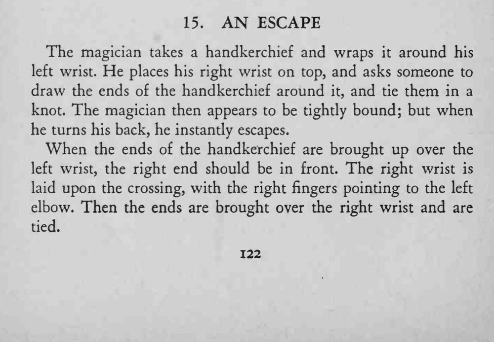
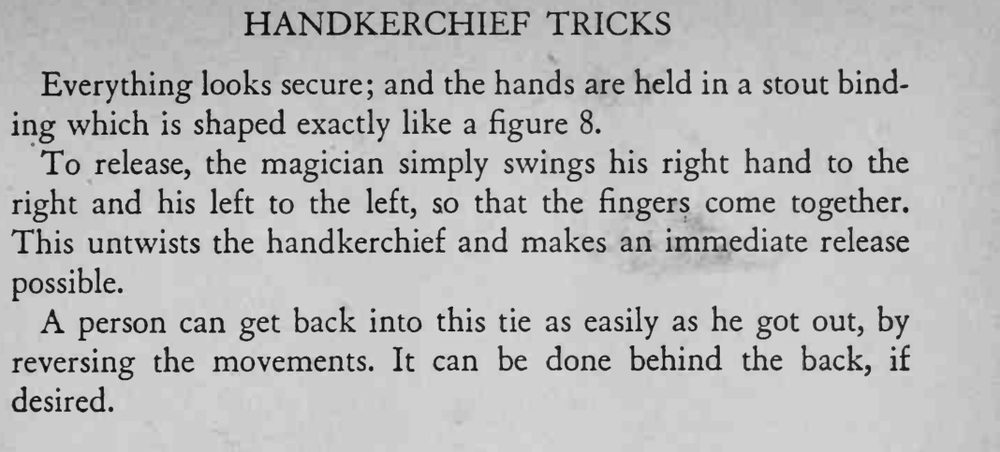

魔术师左腕缠上手帕，右腕压在上面，请人把手帕两端绕右腕打结；看上去两手被牢牢绑住，他一转身背对观众，瞬间就脱开了。
打结前手帕的交叉方向要对，否则甩不开。


The magician takes a handkerchief and wraps it around his left wrist. He places his right wrist on top, and asks someone to draw the ends of the handkerchief around it, and tie them in a knot. The magician then appears to be tightly bound; but when he turns his back, he instantly escapes. When the ends of the handkerchief are brought up over the left wrist, the right end should be in front. The right wrist is laid upon the crossing, with the right fingers pointing to the left elbow. Then the ends are brought over the right wrist and are tied. Everything looks secure; and the hands are held in a stout binding which is shaped exactly like a figure 8. To release, the magician simply swings his right hand to the right and his left to the left, so that the fingers come together. This untwists the handkerchief and makes an immediate release possible. A person can get back into this tie as easily as he got out, by reversing the movements. It can be done behind the back, if desired.